Под дождём на Северном кладбище хоронят Савелия Руна, ночного кассира трамвайного парка. Гроб закрыт. В толпе чёрных зонтов вы видите его самого — живого, мокрого, без зонта. Через десять минут вдова нанимает вас найти мужа и звонить ей каждый вечер в 23:00. Его ищут ещё двое: ловцы страхового общества «Точный час» и артель грузчиков, у которой пропал человек. Восемь вечеров, восемь районов Латрена, одна шкала дистанции на столе — и вопрос, кого на самом деле похоронили.
За десять минут до первой игры
- Откройте первый вечер, прочитайте правду мира и участников. Остальные вечера — планы, их исход решают игроки.
- Выберите пакет под фактическое число игроков. Первые три героя — готовое ядро; остальные добавляются по порядку. Возраст игрока не определяет героя.
- Согласуйте темы, длительность и сигнал паузы. Передайте игрокам только players.html; раздатки выдавайте по отдельности после указанного открытия.
- Откройте Мастерскую проекта, создайте личный черновик и импортируйте выбранный JSON через загрузку пакета. Проверьте состав и начало в предпросмотре. Запуск кампании подтверждает ведущий штатным действием.
- Иллюстрации кампании (48) лежат в assets/ и показываются в книге; в уже запущенную кампанию их переносит scripts/campaign-shared/import-art.ts.
Формат и темы
8 вечеров; Около трёх часов: 10 минут начало и шкала дистанции, три сцены по 45 минут, перерыв 15 минут после второй сцены, 20 минут конец вечера и звонок заказчице.
Латрен — вымышленный город вечного дождя: трамваи, бумажные полисы, телефоны с диском, неон над лужами, театральные и трамвайные билеты, которые размокают в кармане. Страховое общество «Точный час» с часовой башней правит половиной города через подписи. Герои — сотрудники и друзья маленького бюро розыска на Шлюзовой, которое ищет пропавшие вещи и людей. Классы fighter, rogue, cleric и wizard уровня 3 — только механические профили выучки, наблюдения, разговора и бумажной работы; сверхъестественного нет, у героев нет заклинаний, а посох — условный ближний бой. Огнестрел, право, медицина и полицейская работа не симулируются.
Погоня в дожде: всегда на минуту позже, всегда под чужим зонтом. Вежливая заказчица, мокрые билеты, неоновые буквы в лужах — и чувство, что за вами идут те же трамваи.
- Кого хоронят под чужим именем
- Гончие и тот, кто идёт по их следу
- Цена честного отчёта заказчику
- Живой человек, который дешевле мёртвого
- Брат, который ищет не того
Границы
- Все персонажи старше 21 года; детей в кампании нет.
- Нет сексуальных сцен, сексуального насилия, пыток и натуралистичных ран; убийство, совершённое до игры, показывается бумагами и свидетельствами; смерть в игре — за кадром или одной фразой.
- До первого вечера обсудить горе, предательство супруга, оружие в руках близкого и финансовое давление; отдельным вопросом спросить, готов ли стол к сцене, где супруга стреляет в мужа (её можно оставить за кадром). Любую тему можно убрать или затемнить без объяснений.
- На столе лежит X-карта: тронул — сцена останавливается или уходит за кадр без объяснений. Допрос можно заменить письменными вопросами, реплику — пасом.
- Проверки, правило крыш и шкала — вымышленные игровые условности; кампания не учит подлогу, слежке, взлому, обращению с оружием и обходу полиции. Нужные улики доступны без броска.
Люди за столом
- Шкала дистанции лежит на столе с первой сцены. Ведущий двигает фишки карандашом вслух и называет причину: «Мерка — ○ +1», «Сцена кончилась: □ +2, △ +1». Игроки видят, что их двигает, и могут выбирать, чем рискнуть.
- Каждый вечер — один район. В начале вечера фишки встают на стартовые клетки района; перед третьей сценой ведущий сравнивает их вслух и объявляет, кто первым пришёл в логово. Ничья — в пользу отряда: «Дождь задерживает всех одинаково».
- Звонок заказчице в 23:00 — общий выбор отряда в конце вечера: сказать правду, часть правды или промолчать. Ведущий записывает букву в ряд «Звонки» на шкале. Спор решается коротким обсуждением; несогласный игрок может передать решение герою без личного одобрения.
- Ядро — первые три героя: Ванда ведёт разговор, Конрад смотрит и снимает, Роман сверяет бумаги и расписания; роли можно менять в любой сцене. Места 4–8 добавляют руки и взгляды, а не ключи: ни одна улика, проверка или решение не требует героя 4–8. Первого говорящего в сцене менять по кругу; пас всегда разрешён.
- При разделении — куски по 5–8 минут; каждая группа возвращается к шкале с одной находкой. Двигает фишку то, что нашли, а не число групп, которые искали. Длинных одиночных эпизодов не делать.
- Отсутствующий герой занят делом бюро вне кадра; без согласия игрока его не ранят, не подставляют и не тратят его предметы. Уже открытые факты остаются общими. Неверная версия не удаляет следы и не меняет виновного.
- Финал проводится по правилу крыш вслух: до раунда 1 ведущий заполняет «карту крыш» при игроках и объясняет каждое число. Бои начинаются только после осознанного выбора игроков; у каждого боя есть цель кроме победы, а обязательных — два: ворота 2 в вечере 7 и крыши в вечере 8.
- «Знает» бывает раньше вечера 5. Матвей знает, как только видит лист опознания рядом с объявлением о брате: с этого вечера △ больше не получает тайных +2 после правдивого звонка, а в финале артель на крыши не поднимается. Хельга знает, как только видит доказательство подписи (путь В): □ дальше двигается только временем, а в финале часовщики стреляют в Клару.
Масштабирование группы
3 игроков
Ядро: Ванда, Конрад и Роман. Все улики, проверки и пути доступны ядру; роли менять каждую сцену. Шкала и фишки двигаются как обычно. Противники: у навеса один грузчик и двое ловцов, на рынке следопыт и наёмный ловец, у ворот 2 двое ловцов, на крышах по одному в каждой команде; Клара выходит из боя при 40 хитах (снять 12). Правило крыш и карта не меняются, босс один.
4 игроков
По умолчанию. Четвёртая — Регина Хольт: говорит с горюющими свидетелями и держит Савелия, пока ядро занято Кларой. На короткий поиск можно разделиться на две пары с общим возвращением к шкале. Противники: у навеса один грузчик и двое ловцов, на рынке следопыт и наёмный ловец, у ворот 2 трое ловцов, на крышах по двое в каждой команде.
5 игроков
Пятая — Зоя Тарх: знает трамвайные пути в вечерах 2, 5 и 7, но срезанный путь возможен и без неё. Одна пара говорит, другая сравнивает бумаги, пятая ведёт шкалу и билеты. Противники: у навеса грузчик и трое ловцов, на рынке следопыт и наёмный ловец, у ворот 2 четверо ловцов, на крышах по двое в каждой команде.
6 игроков
Шестой — Казимир Лотт: сравнивает почерк вместе с Романом; вывод доступен и без него. Три пары могут вести три нити (разговор, вещи, расписания), но каждая приносит к шкале по одной находке. Противники: у навеса двое грузчиков и трое ловцов, на рынке двое следопытов и двое ловцов, у ворот 2 пятеро ловцов, на крышах по трое в каждой команде, Фальк — в конце раунда К+7 (К — вход Клары), Клара выходит из боя при 18 хитах (снять 34); босс прежний.
7 игроков
Седьмая — Яна Ренк: разносит записки и бегает с поручениями; на крышах это ещё один человек рядом с Савелием. Две тройки ведут поиск, седьмой помогает свидетелю сформулировать ответ, потом роли меняются. Противники: у навеса двое грузчиков и четверо ловцов, на рынке двое следопытов и двое ловцов, у ворот 2 пятеро ловцов, на крышах по трое в каждой команде, Фальк — в конце раунда К+7 (К — вход Клары), Клара выходит из боя при 18 хитах (снять 34).
8 игроков
Восьмой — Тимон Крой: писал некролог Савелия со слов Клары и помнит её слова дословно. Четыре пары ведут разные нити и в конце сцены кладут по одной находке на шкалу; каждая пара проверяет чужую версию до общего решения. Противники: у навеса двое грузчиков и четверо ловцов, на рынке двое следопытов и двое ловцов, у ворот 2 шестеро ловцов, на крышах по трое в каждой команде, Фальк — в конце раунда К+7 (К — вход Клары), Клара выходит из боя при 18 хитах (снять 34); правило крыш и босс не меняются.
Первое чтение вслух
Северное кладбище, три часа дня. Дождь идёт третью неделю, и кладбище стоит под зонтами — чёрными, одинаковыми, тяжёлыми от воды. Гроб закрыт. На мольберте у ямы — портрет: Савелий Рун, ночной кассир трамвайного парка, улыбается под летним зонтом рядом с женой. Священник читает быстро: вода заливает страницу. Вы стоите в задних рядах, у тисов, с мокрыми трамвайными билетами в карманах. Конрад поднимает фотоаппарат для «Вечернего листка» — и в видоискателе, в самом конце толпы, видит человека без зонта. Капли бегут по его лицу. Это Савелий Рун. Он смотрит на собственный гроб, потом прямо в объектив.
Правда мира · только ведущему
- Кто в гробу. 24 октября на Северном кладбище хоронят под именем Савелия Руна Юлиана Корда, 39 лет, агента по полисам «Точного часа». Савелий Рун, 43 года, ночной кассир Трамвайного парка № 2, жив и прячется в Латрене. Тело опознала его жена Клара Рун, 41 год. Она знала, что опознаёт чужого человека.
- Полис. 2 сентября Юлиан Корд выписал полис на жизнь Савелия на 40 000 крон; выгодоприобретатель — Клара. Подпись «С. Рун» на полисе поставила Клара, при Корде, без Савелия. Уговор: после «несчастного случая» Корд получает треть. Клара в долгах после закрытия нотной лавки; полис был её способом выйти из долгов и из брака разом.
- Ночь 12 октября. 9 октября Савелий нашёл дома копию полиса и позвонил Корду; Корд испугался и сказал Кларе. 12-го Корд позвал Савелия «объяснить про полис жены» к навесу 3 на Сухом причале в 21:00. Клара пришла раньше (20:52). Корд потребовал половину вместо трети и пригрозил рассказать; в 21:08 Клара выстрелила в него из маленького пистолета своего покойного отца. Савелий, сошедший с трамвая № 3 в 21:04, видел это из-под фонаря и видел её лицо. Он побежал к трамваю и уронил размокший проездной; она погналась и обронила свой зонт с утиной головой на ручке. Савелий вскочил на отходящий трамвай (21:10). Клара вернулась, положила его проездной в карман пальто Корда, забрала документы Корда и столкнула тело в канал (21:15).
- Опознание. 13 октября Клара заявила в участок на Шлюзовой, что муж не вернулся. 21-го тело прибило к решётке шлюза у Галереи дождемеров. 22-го Клара опознала его «по пальто и проездному», от осмотра лица отказалась. Инспектор Фальк записал рост 171 см и тёмно-синее пальто мастерской «Бранд и сын». Савелий — 184 см, и у него одно пальто: серое в клетку. 23-го Клара подала в «Точный час» заявление на выплату.
- Почему она нанимает отряд. Савелий — единственный свидетель: живой, он отменяет выплату и называет убийцу. Клара не может найти его сама: увидев её, он бежит, а тех, кто его укрывает (сторож причала, портниха, крёстный на шлюзе, сестра в театре), он предупредил о жене. Чужим людям с фотографией и хорошими манерами они откроют. Поэтому Клара нанимает отряд на похоронах, платит вперёд, требует звонка каждый вечер в 23:00 и идёт следом трамваями на 15–20 минут позже. С вечера 3, когда ей говорят правду, она анонимно звонит в артель Корда: пусть грубые люди спугнут или покалечат Савелия. Её подсказки отряду честные: она хорошо знает мужа.
- Соперники. Хельга Меллер, старшая по проверке выплат «Точного часа», ведёт следопытов: ей нужен живой Савелий, чтобы отказать в выплате; она думает, что Савелий и пропавший Корд инсценировали смерть ради денег. Матвей Корд, брат Юлиана и бригадир грузчиков Сухого причала, ведёт артель и наёмных ловцов: по записке брата «Сухой причал, навес 3, Рун» он думает, что Савелий убил или спрятал Юлиана. Никто из них не знает, что Юлиан лежит в могиле Руна.
- Куда бежит Савелий. Он не идёт в полицию: дело закрыто, вдова опознала тело, а его подпись стоит на подложном полисе. Он бежит по районам, ночуя у тех, кто его жалеет, и всегда уходит на последнем трамвае. Он решает показаться живым в единственном месте, где живой Рун стоит больше мёртвого, — в «Точном часе», у Хельги Меллер. Туда он идёт поверху, по крышам Часового квартала, потому что улицы держат ловцы.
- Чем кончается. Никто не признаётся. Клару можно обвинить уликами и живым свидетелем. Финал — дуэль с Кларой на мокрых крышах под ливнем, пока соперники поднимаются за Савелием. Исход решает то, чем кончилась дуэль, и то, кто стоит рядом с Савелием в эту минуту. Любой исход что-то отнимает: победа отряда не возвращает Савелию жену, дом и имя.
Досье дела · только ведущему
Кого похоронили под именем Савелия Руна, кто убил этого человека и зачем Клара Рун наняла отряд искать живого мужа?
Виновник: Клара Рун.
Клара в долгах после закрытия нотной лавки и давно не хочет этого брака. Полис на 40 000 крон с её подписью за мужа давал выход из обоих. Агент Юлиан Корд, выписавший полис, 12 октября потребовал половину вместо трети и пригрозил всё рассказать. После выстрела единственный свидетель — Савелий: живой, он отменяет выплату и называет её. Поэтому ей нужно найти его раньше всех, а найти его можно только чужими руками, которым его прячущие откроют.
Клара сама поставила подпись мужа на полисе при агенте Корде. На Сухом причале во время ссоры она выстрелила в Корда из маленького пистолета покойного отца, положила ему в карман проездной, оброненный Савелием, забрала его документы и столкнула тело в канал. Через десять дней она опознала чужое тело «по пальто и проездному», отказавшись смотреть лицо, и подала заявление на выплату. На похоронах наняла бюро розыска: платила вперёд, брала отчёт каждый вечер в 23:00, ездила трамваями следом и анонимно наводила на названные ей места артель Корда. В вечерах 7 и 8 стреляет сама. Подробностей приёмов в игре нет: «подписала», «выстрелила», «шла следом».
Что произошло до начала игры
- 2 сентября. Агент «Точного часа» Юлиан Корд выписывает полис № 4417 на жизнь Савелия Руна на 40 000 крон, выгодоприобретатель — Клара Рун. Подпись «С. Рун» с большой круглой петлёй на «Р» ставит Клара, Савелия в конторе нет. Уговор: после «несчастного случая» Корд получает треть. (Факт для ведущего; игроки узнают о нём из полиса и подписи.) Свидетели: Юлиан Корд, Клара Рун.
- 3 октября. Савелий отдаёт Терезе Окс своё единственное пальто, серое в клетку, подшить левый локоть; она снимает мерку: рост 184, рукав 64, на подкладке мелом «Рун 3.X». Пометка в карточке: «Других не шила». Свидетели: Тереза Окс, Савелий Рун.
- 9 октября. Савелий находит дома копию полиса и звонит агенту Корду. Корд пугается и пересказывает разговор Кларе. Свидетели: Савелий Рун, Юлиан Корд, Клара Рун.
- 12 октября, 20:52–21:15. Сухой причал, навес 3. В 20:52 дама под чёрным зонтом спрашивает сторожа про навес; в 21:04 с трамвая № 3 сходит высокий в клетчатом пальто (Савелий); в 21:08 хлопок — Клара стреляет в Корда после ссоры о доле, Савелий видит это и видит её лицо; в 21:10 Савелий уронил размокший проездной и вскакивает на отходящий трамвай, Клара роняет свой зонт с утиной головой; в 21:15 всплеск — Клара кладёт проездной Савелия в карман Корда, забирает его документы и сталкивает тело в канал. Свидетели: Григорий Стель, Савелий Рун, Клара Рун.
- 13 октября. Стель утром находит у навеса 3 дамский зонт с утиной головой и убирает его в шкаф находок. В тот же день Клара заявляет в участок на Шлюзовой, что муж не вернулся, а Матвей Корд находит у брата записку о встрече: «12-го, 21:00, Сухой причал, навес 3, Рун. Треть — мало». Свидетели: Григорий Стель, Степан Фальк, Матвей Корд, Клара Рун.
- 19 октября. Савелий, скрываясь, меняется пальто с носильщиком Крытого рынка Трофимом Шпаком: теперь серое клетчатое пальто носит Трофим, а Савелий ночует в его подсобке. Свидетели: Трофим Шпак, Савелий Рун.
- 21–22 октября. 21-го смотритель Нелль снимает с решётки шлюза тело мужчины в тёмно-синем пальто; течение всю ночь шло от Сухого причала. 22-го Клара в участке опознаёт тело «по пальто и проездному», от осмотра лица отказывается. Инспектор Фальк записывает рост 171 см и пальто «Бранд и сын» и закрывает дело. Свидетели: Густав Нелль, Степан Фальк, Клара Рун.
- 23 октября. Клара подаёт в «Точный час» заявление на выплату 40 000 крон. Хельга Меллер открывает проверку и узнаёт, что агент, выписавший полис, не появлялся в конторе с 12-го. Свидетели: Хельга Меллер, Клара Рун.
Независимые пути доказательства
А. Чужой в гробу
Известные факты (вещи и бумаги): в листе опознания покойный ростом 171 см, в тёмно-синем пальто «Бранд и сын»; по карточке Терезы Савелий ростом 184 см и у него одно пальто — серое в клетку; это пальто с мелом «Рун 3.X» с 19 октября носит живой носильщик Трофим. Свидетельства: слова Терезы («Других не шила») и Трофима об обмене. Вывод, который делает отряд: покойник — не Савелий, а жена подписала, что это его пальто и его проездной, и отказалась смотреть лицо. Неопределённость: одно это не говорит, кто лежит в гробу и кто убил; ложное опознание можно объяснить горем. Путь доказывает ложное опознание, но не убийство.
Улики: Лист опознания; Мерка Терезы; Серое пальто в клетку.
Б. Клара на Сухом причале
Известные факты: на похоронном портрете Клара стоит под зонтом с утиной головой, а на похоронах у неё новый зонт с биркой; такой же зонт с биркой «13.X, у навеса 3, утро» лежит в шкафу находок; сторож записал в 20:52 даму под чёрным зонтом у навеса 3 и хлопок в 21:08; записка Юлиана назначает встречу «Рун» на 21:00 у навеса 3 и говорит о «трети». Вывод отряда: «Рун», с которой Корд говорил о доле, — Клара, она была у навеса до выстрела. Для подозрения хватает портрета и зонта; журнал и записка связывают зонт со временем и местом. Неопределённость: сторож не видел лица, а зонт мог быть потерян раньше; но собранный путь ставит Клару у навеса в минуту выстрела — это единственный путь, которого одного хватает для обвинения в убийстве Корда.
Улики: Портрет у могилы; Дамский зонт из шкафа находок; Ночной журнал причала; Записка Юлиана.
В. Подпись на полисе
Известные факты: подпись «С. Рун» на полисе № 4417 выведена с большой круглой петлёй на «Р»; настоящая подпись Савелия на корешке жалованья парка — «Р» одной прямой чертой с крючком; записка Клары отряду при найме имеет ту же круглую петлю на «Р» в «К. Рун». Получатель выплаты — Клара, полис выписал агент, пропавший 12-го. Вывод отряда: за мужа подписалась Клара, а не он. Неопределённость: сходство почерка — не приговор, отряду важно сказать «похоже по двум признакам», а не «доказано». Этот путь снимает версии о том, что Савелий и Корд сговорились ради денег. Путь доказывает подлог.
Улики: Записка заказчицы; Расписка парка; Полис на 40 000.
Г. Гончие
Известные факты: в сумке у ворот 2 лежат трамвайные билеты по маршрутам отряда вечеров 5 и 6, каждый на 15–20 минут позже (билет 30-го размыт), а такие же билеты отряд находил на полу ночлежки и на ступенях театра; листок артели записал анонимный женский звонок о воротах 2, на обороте — записи о местах, которые отряд называл заказчице; Савелий написал сестре на полях: «Не говори Кларе. Никому, кто от неё. Она знает, где я, раньше меня». Вывод отряда: Клара шла по следам отряда к единственному свидетелю и наводила на него грубых людей; её просьба «скажите мне, где он» означала не заботу. Неопределённость: сумку можно считать чужой, а звонок — анонимным; связь с Кларой делают совпадение времени и мест с отчётами отряда, а не признание. Путь доказывает слежку, но не убийство.
Улики: Билеты из сумки; Листок из конторы артели; Записка на полях суфлёрской книги.
Подозреваемые
Савелий Рун
Сам инсценировал смерть ради выплаты или убил Корда, с которым делил деньги по полису.
Записка «Рун» о встрече у навеса 3, бегство с причала в 21:10 по записи сторожа, он прячется и не идёт в полицию.
Получатель полиса — не он; подпись на полисе не его (путь В: петля на «Р» против прямой черты на корешке парка); он живёт по ночлежкам на гроши и бежит от жены, а не от полиции; сторож записал только бегущего, но не стрелявшего.
Юлиан Корд
Выписал полис, инсценировал смерть клиента и сбежал с долей.
Пропал в ночь 12-го, стол в конторе пуст, у него были долги, Хельга считает его соучастником.
Рост 171 и пальто «Бранд и сын» из листа опознания совпадают с объявлением о пропаже Корда: он не сбежал, он лежит в гробу под именем Руна. Отряд узнаёт это, сложив объявление и лист опознания.
Клара Рун
Получательница 40 000 крон по полису на жизнь мужа; долги после закрытия нотной лавки.
Пути А–Г: ложное опознание чужого тела, зонт с портрета у навеса 3, подпись с петлёй на полисе, билеты по маршрутам отряда и анонимные звонки артели.
Для виновной: одной выплаты мало — вдовы всегда получатели; ложное опознание можно объяснить горем, зонт — тем, что она искала мужа, а билеты — случайной поездкой. Недостаточно и слов отряда «она подозрительно вежлива»; прямое обвинение по телефону она отклонит усталой вежливостью, а Фальк без живого Руна или бумаги дела не откроет. В финале её берут за стрельбу на крыше при любом исходе; для обвинения в убийстве Корда нужен путь Б или показания живого Савелия вместе с ещё одним путём; пути А и В доказывают ложное опознание и подлог, путь Г — что она шла по следу отряда.
Матвей Корд
Долги брата, ссора, наследство артели; нанял ловцов и громче всех ищет Руна.
Платит наёмным ловцам, бьёт людей, записка о встрече брата с «Рун» у него одного.
Он не знает, что брат мёртв, и сам показывает записку, которая ведёт к навесу 3; в ночь 12-го он был на смене на Восточном причале при двадцати грузчиках; увидев объявление рядом с листом опознания, он сам понимает, кто лежит в гробу.
Хельга Меллер
Премия от несостоявшейся выплаты и желание скрыть позор: полис выписал её подчинённый.
Знает полис, ведёт охоту за Савелием, покупает свидетелей, её следопыты перехватывают вещи.
У неё нет доступа к причалу в ночь 12-го и нет выгоды в смерти Корда; ей нужен живой Савелий, чтобы отказать в выплате; увидев путь В, она сама разворачивает следопытов против Клары.
Проверяемые ложные версии
Савелий убил Юлиана Корда и прячется (версия Матвея Корда).
Корд шёл к навесу 3 говорить о «трети» — долю платит получатель полиса, а получатель — Клара; дама под чёрным зонтом была у навеса до хлопка, и её зонт там остался; подпись на полисе не рука Савелия.
Проверка: Записка Юлиана; Полис на 40 000; Дамский зонт из шкафа находок.
Савелий и Корд вместе инсценировали смерть ради страховых денег (версия Хельги Меллер).
Савелий ничего не получает: выгодоприобретатель — Клара, а подпись на полисе не его. Корд не сбежал: рост и пальто из листа опознания совпадают с объявлением о его пропаже, на кладбище лежит он.
Проверка: Полис на 40 000; Расписка парка; Объявление о пропаже.
Человек в клетчатом пальто на рынке — сам Савелий, а значит, сомневаться в опознании не из-за чего.
Носильщик на голову ниже Савелия; на подкладке мел Терезы «Рун 3.X», заплата её работы, но пальто он получил 19-го числа в обмен. Мерка 184 против 171 из листа опознания показывает, что покойный был не в этом пальто и не Савелий.
Проверка: Серое пальто в клетку; Мерка Терезы.
Если расследование зашло в тупик
- Ложное обвинение. Если отряд при Фальке обвиняет Савелия, Матвея или Хельгу, Фальк записывает заявление и отпускает: «Принесите мне живого Руна или бумагу, которая спорит с моей». Обвинённая сторона закрывается: на шкале соперник получает +1 (□ или △). Улики не пропадают, виновная не меняется, а отряд может вернуться к путям А–Г и показать другой факт.
- Раннее обвинение Клары (вечера 1–6). Перед Фальком: он принимает заявление, но без живого Руна или бумаги дела не откроет; Клару вызывают и отпускают. Подозрение отмечается, только если при этом отряд положил перед Фальком две улики одного пути (А, Б или В); голое обвинение не в счёт. Обвинение по телефону в 23:00 считается звонком «М»: Клара вежливо кладёт трубку. Клара продолжает платить и брать звонки, как прежде.
- Потерянная улика. У каждой улики есть запасной путь: если Клара после правдивого звонка забрала зонт — остаётся её подпись в книге находок «Получено. К. Рун, 26.X, 9:40»; если пальто отобрали у Трофима — путь А держится на мерке Терезы и слове Трофима; если сумку не подняли у ворот 2 — Захар приносит её утром в бюро. Путь засчитывается по подмене, и ведущий не вычёркивает его.
- Несговорчивый свидетель. Если свидетеля обидели или напугали (на шкале соперник +1), он отдаёт улику следующим вечером через другого человека: Стель — через Матвея, Тереза — через Трофима, Нелль — через Аглаю, Милена — через старого постояльца. Фишка отряда за неё в этот вечер не двигается. Аглая и Савелий могут сказать то же вслух, если книга недоступна.
- Тупик к вечеру 7. Письмо Савелия приходит при любой шкале; в билетном зале парка Савелий сам рассказывает о ночи 12 октября. Это свидетельство, а не собранный путь, но оно направляет отряд к уликам, которые он пропустил: зонту, подписи, билетам. Никто не обязан признаваться; Клара не признаётся ни в одном из исходов.
Восемь вечеров
- 1. Похороны под чужим именем — Увидеть живого Савелия Руна, принять заказ вдовы и понять, куда он ушёл с кладбища.
- 2. Шкаф находок — Найти, где Савелий прячется в порту, и понять, что случилось на Сухом причале в ночь 12 октября.
- 3. Двойник в пальто — Найти Савелия на рынке и понять, чьё пальто было на покойнике.
- 4. За минуту до вас — Застать Савелия в ночлежке «Ожидание» и понять, куда он пойдёт дальше.
- 5. Кто платит гончим — Найти Савелия у шлюза и узнать, кто и зачем ведёт двух других охотников.
- 6. Антракт — Найти Савелия в театре у сестры, пока его не взяли охотники, и выяснить, куда он пойдёт дальше.
- 7. Ворота 2 — Встретиться с Савелием в трамвайном парке, услышать его рассказ о ночи 12 октября, пережить выстрел и бой у ворот 2 и понять, кто идёт по следу отряда.
- 8. Ливень над Часовым кварталом — Остановить Клару Рун, пока Савелий жив и рядом с ним свой человек. Победа над всеми на крыше не нужна: исход решают то, чем кончилась дуэль, и то, кто стоит рядом с Савелием в эту минуту.
Места
Латрен
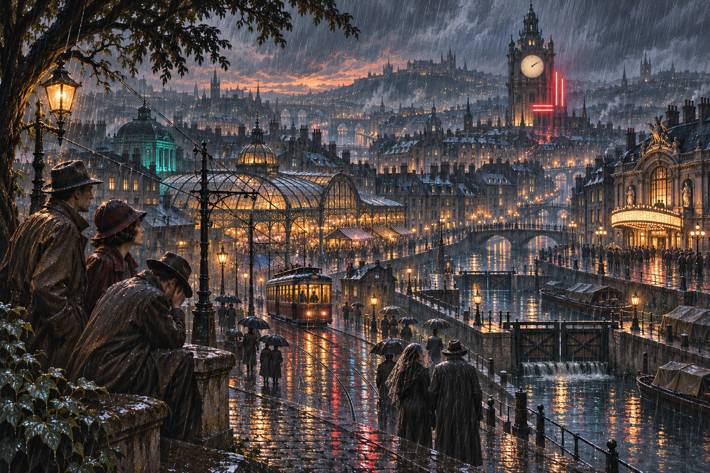
Город вечного дождя, трамвайных колец и неоновых вывесок, которые отражаются в каждой луже.
Северное кладбище

Тисы, море чёрных зонтов, часовня с навесом, сторожка у задней ограды и трамвайное кольцо у ворот.
Сухой причал

Краны, навесы с номерами, ворота артели грузчиков, шкаф находок у будки сторожа и канал за краем настила.
Крытый рынок

Стеклянная крыша, ряды под жестяными козырьками, рыбные ряды с неоновой вывеской, подсобки и галерея над рядами.
Штопальная Терезы Окс

Будка в ряду тканей Крытого рынка: мел, ящик с мерками, манекен в чужом пальто.
Ночлежный дом «Ожидание»
Сорок коек у трамвайного кольца, сушилка с чужими плащами, толстая книга постояльцев и задняя лестница во двор прачечной.
Шлюз и Галерея дождемеров

Шлюз на Шлюзовой с решёткой, стеклянная галерея со стеклянными трубками дождемеров, верхняя комната и мост над водой.
Театр «Фонарь»

Афиши под стеклом, партер, будка суфлёра, коридор под сценой, колосники и люк на крышу.
Трамвайный парк № 2 на Линейной
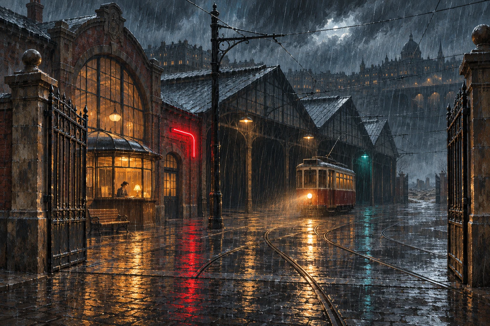
Депо, пути, билетный зал, главные ворота и задние ворота к пустырю, служебный вагон.
Крыши Часового квартала
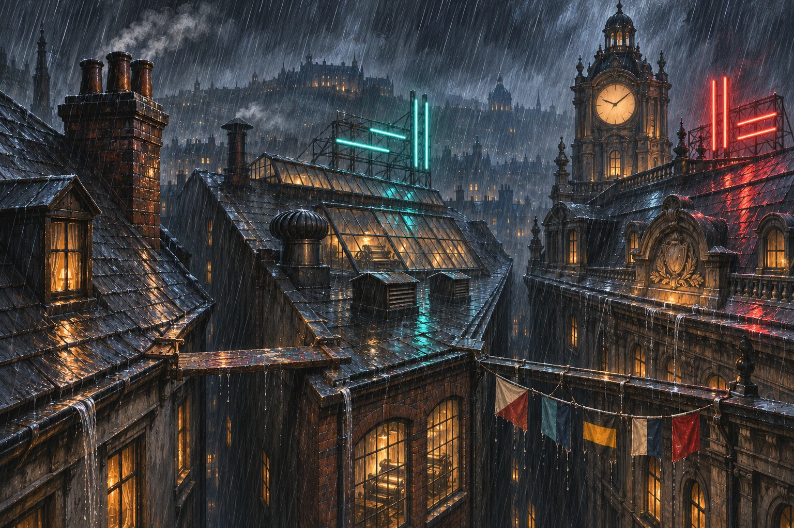
Мокрая черепица доходного дома, крыша типографии «Вечерний листок» и крыша «Точного часа» с часовой башней и неоновыми буквами.
Страховое общество «Точный час»

Окошки с номерами, латунные часы и часовая башня над крышей.
Квартира Рунов
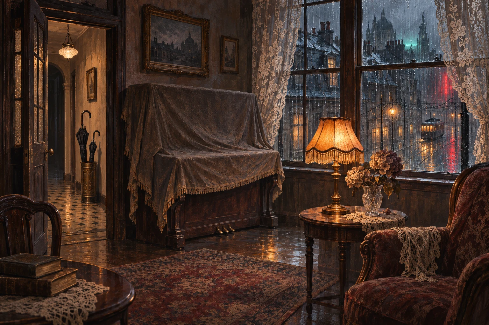
Третий этаж на Колокольной, пианино под чехлом, два зонта в прихожей — один мужской.
Участок на Шлюзовой

Дежурная комната, мокрые шляпы на крючках и комната для опознания.
Предметы

Вечер 1
Книжка расписаний Романа
Потёртая книжка в картонной обложке, разбухшая от дождя: расписания всех трамвайных линий Латрена, поля испещрены карандашными поправками Романа, закладки из старых размокших билетов.
В вечерах 2 и 5 Роман проходит трамвайный срезанный путь без броска (○ +2 вместо проверки СЛ 12). В вечере 7 по книжке видно, что служебный вагон парка уходит в 23:50, и это даёт ○ +1 в сцене 1. Сама по себе улики не содержит и ничего не доказывает.

Вечер 1 · улика
Конверт заказчицы
Влажный жёлтый конверт с пятьюдесятью кронами новыми и сухими купюрами; на клапане написана расписка тем же ровным почерком с большой петлёй на «Р» в подписи «К. Рун».
Десять крон из конверта можно отдать свидетелю вместо услуги: ○ +2 без хода соперников (□ и △ не двигаются). Не больше пяти раз за кампанию. Деньги, показанные на людях, считаются шумом (△ +1). Расписка на клапане служит запасным вариантом записки о найме. После вечера 7 конверт можно показать Фальку как вещь: им платили гончим.

Вечер 2 · улика
Снимок с похорон
Отпечаток размером с ладонь, ещё чуть влажный с краёв: ряды чёрных зонтов под дождём, у тисов в конце толпы высокий мокрый человек без зонта, лицом в объектив.
Раз за вечер заменяет верный вопрос (○ +1) в любой сцене, если снимок показывают подходящему человеку. Убеждает Стеля, Матвея, Терезу, Аглаю и Фалька, что Савелий жив; в сделке с Хельгой в вечере 5 её просят отдать снимок на сутки, и тогда на следующий вечер он вопрос не заменяет. Выданный Хельге снимок возвращается через вечер.
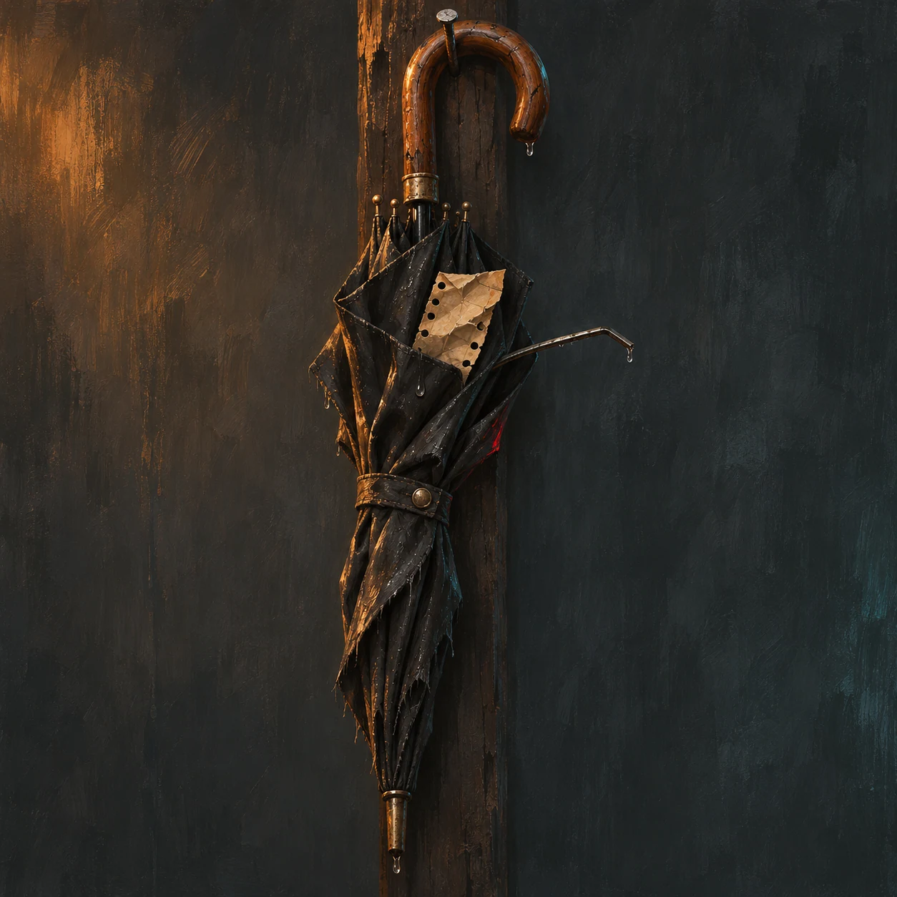
Вечер 1
Мужской зонт со сломанной спицей
Старый чёрный мужской зонт, одна спица торчит наружу; на гвозде в сторожке у задней ограды. В складках ткани засунут мятый трамвайный билет № 3, пробитый сегодня в 13:52.
Приз логова вечера 1: достаётся только если отряд пришёл в сторожку первым (✓). Билет показывает маршрут «от Сухого причала». В вечере 7 зонт, возвращённый Савелию, даёт ему узнать отряд и отмечает «Доверие» на карте крыш (как и Подозрение, записка Клары или сказанное ему подозрение). Если сторожку перевернула артель (△ или □△), зонт у Матвея: его можно получить в сделке вечера 5. Если первыми были часовщики (□), зонт приобщён к делу «Точного часа» и не возвращается.
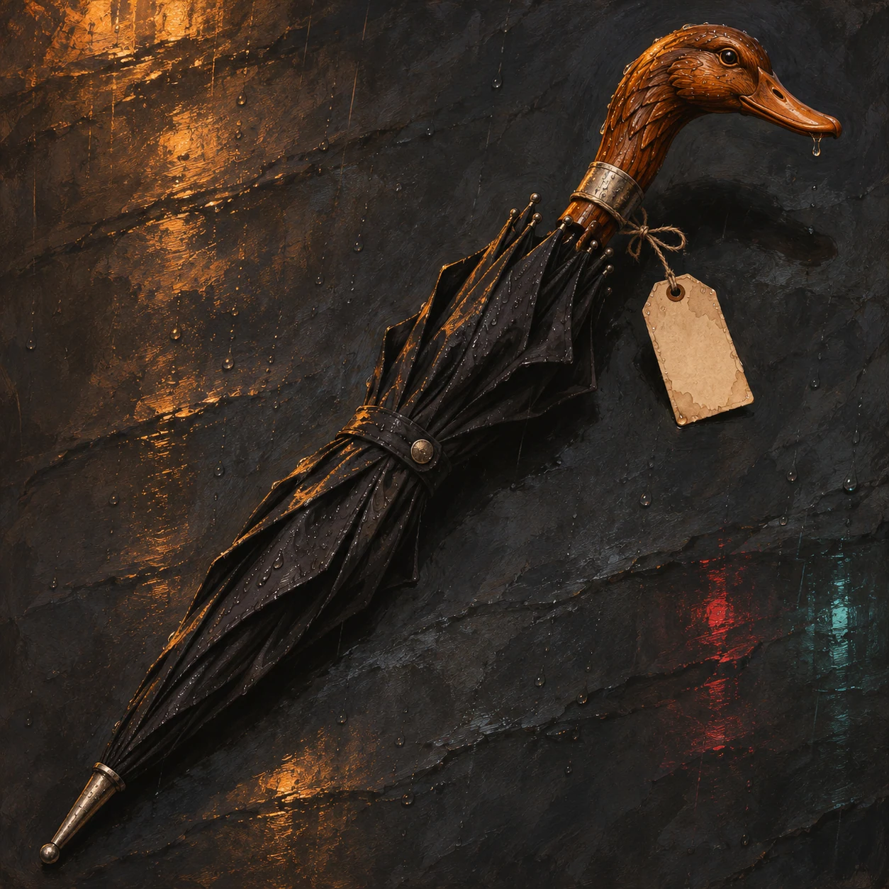
Вечер 2 · улика
Зонт с утиной головой
Чёрный дамский зонт с резной деревянной ручкой в виде утиной головы и серебряным кольцом на её шее; на привязанной бирке карандашом: «13.X, у навеса 3, утро». Лежит в шкафу находок у будки сторожа.
Стель отдаёт его под подпись героя «передам хозяйке». Вместе с портретом у могилы даёт путь о причале (Б). В финале, если путь Б не собран, зонт в руке героя даёт одно «Слово» на крышах. Если зонт не забрали, а отряд назвал Кларе причал правдиво, утром его заберут под подпись в книге находок; запись заменит вещь.
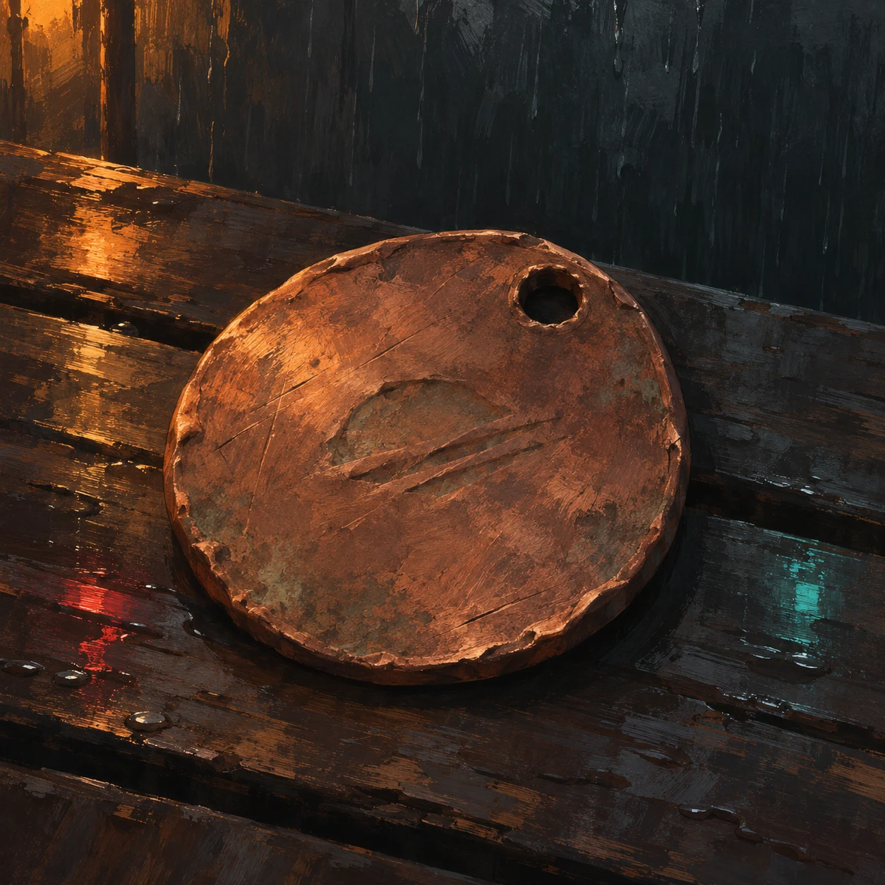
Вечер 2
Медный жетон № 17
Тусклый медный жетон с выбитым номером 17 и дырочкой для шнурка; лежал на лавке в кабине старого портового крана, ещё тёплый от чьей-то ладони.
Приз логова вечера 2: достаётся, если отряд пришёл в кабину первым (✓). В вечере 7 открывает калитку у ворот 2 Трамвайного парка: отряд входит без шума (○ +2), а выстрел из темноты в сцене 2 идёт с помехой. Ни улики, ни свидетельства не содержит.
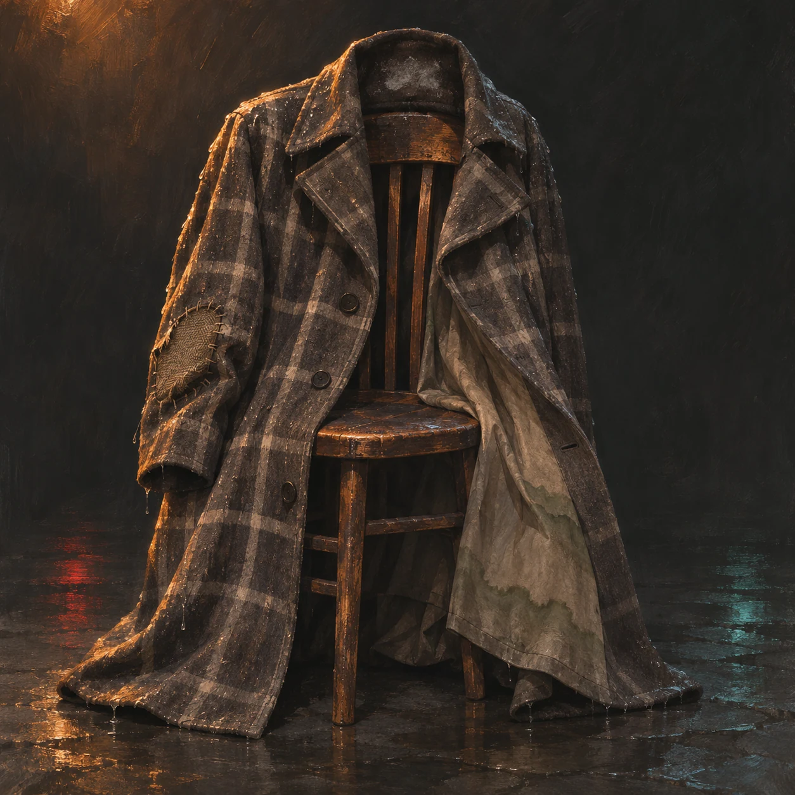
Вечер 3 · улика
Серое пальто в клетку
Длинное серое пальто в крупную клетку, подкладка в разводах от рыбной воды; заплата на левом локте, внутри мелом выведено «Рун 3.X». Рукава на носильщике подвёрнуты дважды.
Трофим отдаёт его за десять крон, услугу или в обмен на свой дождевик. Служит уликой пути о чужом в гробу (А). В вечере 6 герой, надевший пальто и прошедший через фойе, уводит одну команду соперников на выбор: её фишка −2. Если после правдивого звонка вечера 3 пальто осталось на рынке, ночью его отнимут.

Вечер 1
Карточка Фалька
Небольшая визитка из плотного картона, края размокли: «С. Фальк, участок на Шлюзовой, 2-12» и штамп с мокрым чернильным пятном.
Позвонить по ней можно в вечере 7 из бюро: Фальк приезжает к парку после боя у ворот 2, Савелия уже не застаёт, но видит сумку и листок: «Без него не открою. Найдёте — звоните». Тогда в вечере 8 он выходит на крышу на 2 раунда раньше. Без живого Савелия и бумаги дело он не открывает.
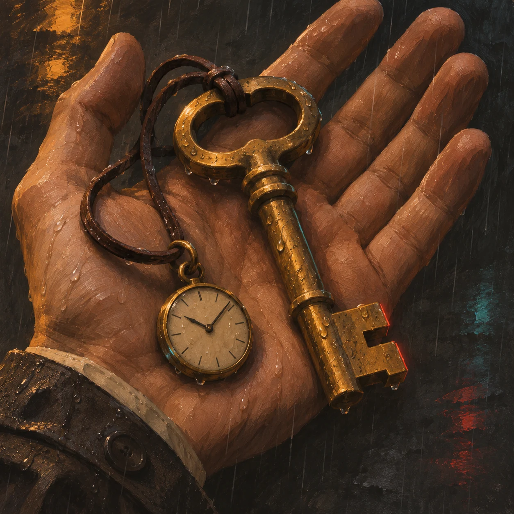
Вечер 5
Ключ от двери башни
Тяжёлый латунный ключ на кожаном шнурке с жетоном-циферблатом «Точный час»; ложится в ладонь холодной тяжестью.
Хельга отдаёт его на мосту шлюза в сделке вечера 5. До боя (сцена 1 вечера 8) отряд запирает им дверь башни с чёрного хода: часовщики входят на 2 раунда позже, а Клара — на раунд позже и не из башни, а по лестнице «Точного часа» 14/12. Если «Хельга знает», дверь не запирают. Ключ ничего не доказывает.
Фигуры противников
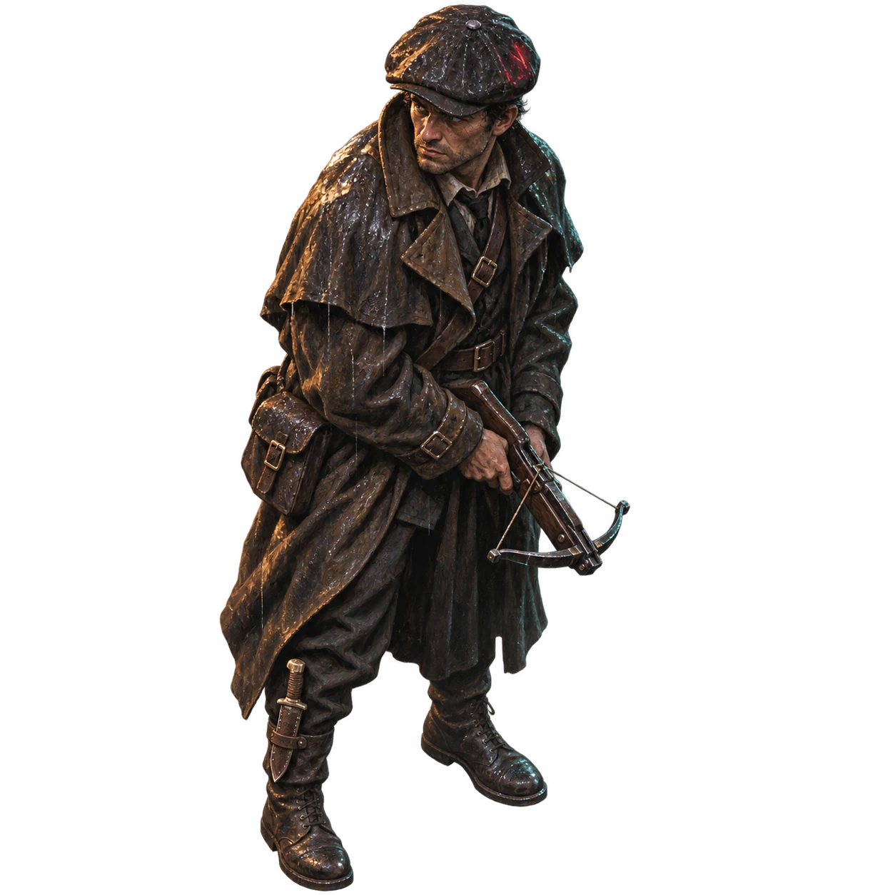
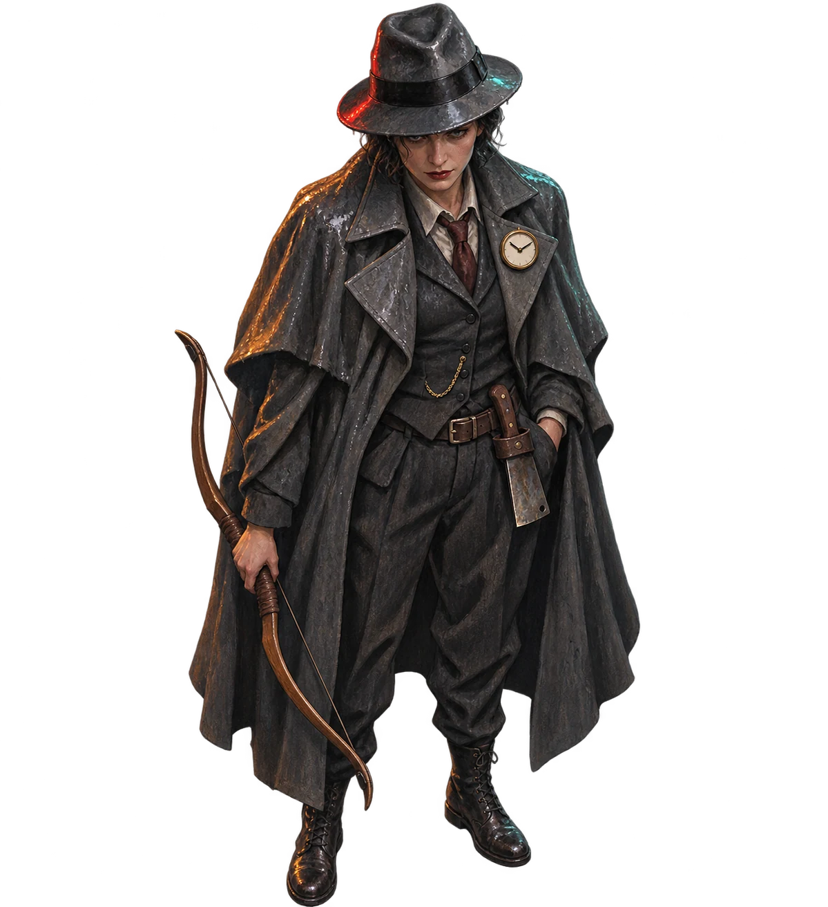


Клара Рун

41 лет. Чёрное пальто по фигуре, вуаль поднята, новый чёрный зонт с картонной биркой магазина ещё на ручке; перчатки сухие даже под дождём. Вдова Савелия Руна, бывшая хозяйка нотной лавки на Колокольной. Нанимает бюро найти мужа, которого видели живым на его собственных похоронах, и платит вперёд.
Место: Квартира Рунов
Намерение
Узнать, где Савелий, раньше всех и прийти туда самой.
Собственные знания
- Всё о ночи 12 октября на Сухом причале и о том, что Савелий её видел.
- Места, где Савелий мог бы прятаться: порт (сторож Стель), рынок (портниха Тереза), ночлежка «Ожидание», шлюз (крёстный Нелль), театр (сестра Аглая).
- Номер конторы артели Корда.
- Что Хельга Меллер проверяет её заявление на выплату.
Секрет или личное убеждение
Застрелила Юлиана Корда 12 октября у навеса 3, сама подписала за мужа полис на 40 000 крон и опознала чужое тело как мужа. Нанимает отряд как гончих: идёт за ним трамваями на 15–20 минут позже, с вечера 3 анонимно наводит на Савелия артель Корда.
Граница и раскрытие
Никогда не признаётся; на прямое обвинение отвечает усталой вежливостью и уходит из разговора. Стреляет только в вечерах 7 и 8.
До вечера 7 вскрывается только уликами (чужой в гробу, подпись на полисе, зонт с причала, билеты в сумке); сама ничего не подтверждает. После выстрела в трамвайном парке её выдают сумка с билетами и записки артели.
Савелий Рун

43 лет. Высокий, сутулится, без зонта; с вечера 3 в чужом коротком дождевике, рукава до косточек; руки кассира, пальцы в чернилах компостера. Ночной кассир Трамвайного парка № 2 на Линейной; похоронен 24 октября.
Место: Трамвайный парк № 2 на Линейной
Намерение
Остаться живым и показаться живым тем, кому живой Рун дороже мёртвого.
Собственные знания
- Ночь 12 октября своими глазами: сошёл с трамвая № 3 в 21:04, видел выстрел в 21:08, вскочил на отходящий трамвай в 21:10.
- Что 9 октября нашёл дома копию полиса и звонил агенту Корду.
- Кто его прячет: Захар, Стель, Тереза и Трофим, Милена, крёстный Нелль, сестра Аглая.
- Расписание всех ночных трамваев Латрена.
Секрет или личное убеждение
Видел, как жена застрелила Юлиана Корда, и боится её больше полиции. Не идёт в полицию: его настоящая подпись стоит рядом с подложной на бумагах, а дело закрыто.
Граница и раскрытие
Не идёт в полицию; не говорит с теми, кого считает людьми Клары, пока не увидит доказательство обратного (зонт, вслух сказанное подозрение).
О ночи 12 октября рассказывает коротко и сам, в билетном зале парка в вечере 7, всегда — даже тем, кому не верит. Доверие (зонт, записка Клары, сказанное вслух подозрение) решает другое: пойдёт ли он к отряду на крышах.
Хельга Меллер

47 лет. Серый плащ, жетон с циферблатом на лацкане, сухой карандаш за ухом и папка в клеёнке. Старшая по проверке выплат страхового общества «Точный час»; ведёт проверку по заявлению вдовы Руна.
Место: Страховое общество «Точный час»
Намерение
Живого Савелия Руна и его подпись «я жив» до 1 ноября, когда выплату придётся утвердить.
Собственные знания
- Полис № 4417 от 2 сентября: агент Корд, получатель Клара Рун, 40 000 крон.
- Заявление Клары на выплату от 23 октября.
- Корд не появлялся в конторе с 12 октября.
- Савелий жив: это известно ей с похорон.
- Слова собственного контролёра на трамвайных линиях.
Секрет или личное убеждение
Уверена, что Савелий и пропавший агент Корд сговорились и инсценировали смерть. Её премия — два процента от каждой несостоявшейся выплаты; Корд был её подчинённым, и его полис — её позор.
Граница и раскрытие
Не нарушает закон на виду: платит, а не бьёт. На крышах стреляет только в Клару, если знает правду, иначе берёт Савелия, не калеча.
В вечере 5 показывает страницу полиса и отдаёт ключ башни в обмен на то, что знает отряд.
Матвей Корд

46 лет. Широкий, в брезентовой куртке, без шапки; на ремне крюк грузчика; у ворот артели — объявление с лицом брата. Бригадир артели грузчиков Сухого причала; ищет пропавшего брата Юлиана.
Место: Сухой причал
Намерение
Найти Савелия Руна и узнать, где Юлиан.
Собственные знания
- Записку брата: «12-го, 21:00, Сухой причал, навес 3, Рун. Треть — мало».
- Что Юлиан в начале октября говорил: «Скоро будут деньги, большой полис».
- Что пальто «Бранд и сын» подарил брату он сам.
- С вечера 3 ему звонит неизвестная женщина и называет места, где был отряд.
Секрет или личное убеждение
Потратил на наёмных ловцов сбережения брата и винит себя: в начале октября Юлиан просил у него в долг, а он отказал.
Граница и раскрытие
Бьёт, но не убивает; останавливается, когда видит доказательство, что брат мёртв.
Показывает записку брата на мосту шлюза в вечере 5 за честный ответ, на кого работает отряд.
Юлиан Корд

39 лет. По объявлению: усики, родинка у брови, тёмное пальто. Агент «Точного часа», пропавший 12 октября.
Место: Северное кладбище
Намерение
До своей смерти хотел треть выплаты по полису, потом половину.
Собственные знания
- Уговор с Кларой Рун о трети выплаты.
- Что Савелий Рун звонил ему 9 октября.
- Что встреча назначена на 12 октября у навеса 3.
Секрет или личное убеждение
Выписал полис на жизнь Савелия Руна с подписью, поставленной не им; договорился с Кларой о доле. Лежит в могиле под именем Савелия Руна.
Граница и раскрытие
Не появляется и не говорит: его слова — только записка, объявление и бумаги полиса.
Объявление о его пропаже рядом с листом опознания: рост и пальто совпадают.
Григорий Стель

58 лет. Ночной сторож причала: клеёнчатая накидка, очки на шнурке, журнал под мышкой, ключ от шкафа находок. Записывает всё, что случается на причале ночью, и всё, что находит утром.
Место: Сухой причал
Намерение
Вернуть каждую находку хозяину и спокойно досидеть смену.
Собственные знания
- Свои записи 12 октября: 20:52, 21:04, 21:08, 21:10, 21:15.
- Дамский зонт с утиной головой найден 13 октября у навеса 3 и лежит в шкафу находок.
- Что Савелий спрашивал этот зонт и ночевал в кабине крана.
Секрет или личное убеждение
Знал отца Савелия. Пустил Савелия ночевать в кабину старого крана после ночи 23 октября и не отдал ему дамский зонт: «Вещь отдаю хозяйке».
Граница и раскрытие
Журнал не отдаёт, но читает вслух и позволяет переписать; зонт выдаёт только под подпись «передам хозяйке».
В вечере 2 у шкафа находок читает журнал за 12 октября и показывает зонт.
Тереза Окс

44 лет. Портниха Крытого рынка: сантиметр на шее, мел в кармане фартука, булавки во рту. Штопает и перешивает пальто для половины Трамвайного парка.
Место: Штопальная Терезы Окс
Намерение
Чтобы её работу не путали с чужой.
Собственные знания
- Мерку Савелия: рост 184, рукав 64.
- Его единственное пальто — серое в клетку, заплата на левом локте, работа от 3 октября, мел на подкладке «Рун 3.X».
- Что мастерская «Бранд и сын» шьёт синее и коротко.
Секрет или личное убеждение
Догадывается, что Савелий жив: на рынке видели его пальто. Молчит из жалости.
Граница и раскрытие
Книгу мерок показывает, но не отдаёт; ложь про мерку не повторит.
В вечере 3 показывает карточку мерки Савелия.
Трофим Шпак

33 лет. Носильщик рыбных рядов, на голову ниже Савелия, в чужом сером клетчатом пальто с дважды подвёрнутыми рукавами. Носит ящики на Крытом рынке.
Место: Крытый рынок
Намерение
Тёплое пальто и чтобы его не трогали.
Собственные знания
- День обмена пальто: 19 октября.
- Что кассир ночевал в подсобке 19–23 октября и ещё раз 25–26 октября.
- Что 26 октября в шесть вечера он уехал на трамвае № 5 «туда, где не спрашивают».
Секрет или личное убеждение
19 октября поменялся пальто с «высоким кассиром» и пускал его ночевать в подсобку за рыбными рядами; по просьбе кассира ходит в этом пальто днём.
Граница и раскрытие
Убегает от громких людей; со спокойными говорит за папиросу или за помощь с ящиками.
В вечере 3 говорит про обмен пальто и показывает заплату и мел на подкладке.
Милена Восс

36 лет. Управляющая ночлежки: связка ключей на поясе, сухие руки, мокрый подол. Держит ночлежный дом «Ожидание» на сорок коек у трамвайного кольца.
Место: Ночлежный дом «Ожидание»
Намерение
Тишину и чтобы платили вперёд.
Собственные знания
- Что «Т. Арн» живёт у неё с 26 октября на койке 31.
- Что он подолгу смотрел на афишу театра «Фонарь» у забора.
- Что швейцар носит записки в артель Корда.
Секрет или личное убеждение
Любит этот дом больше, чем показывает; пустила постояльца «Т. Арна» без бумаг, потому что он заплатил проездным талоном, а не деньгами.
Граница и раскрытие
Книгу постояльцев показывает только за услугу или вежливость; чужих коек не открывает.
В вечере 4 показывает книгу постояльцев и койку 31.
Густав Нелль

61 лет. Смотритель шлюза: клеёночный фартук, багор, стеклянные трубки дождемеров в нагрудном кармане. Держит шлюз на Шлюзовой и меряет дождь для города.
Место: Шлюз и Галерея дождемеров
Намерение
Чтобы вода текла, а крестника оставили в покое.
Собственные знания
- Запись в книге шлюза: 21 октября, 6:10, тело в тёмно-синем пальто на решётке, течение всю ночь от Сухого причала.
- Что Савелий ночевал в верхней комнате и ушёл к сестре в театр.
Секрет или личное убеждение
Крёстный Савелия; пустил его в верхнюю комнату галереи. 21 октября сам снял тело с решётки и с тех пор плохо спит.
Граница и раскрытие
О крестнике молчит, пока не поверит отряду.
В вечере 5 показывает книгу шлюза, а после помощи с решёткой называет, куда ушёл крестник.
Степан Фальк

49 лет. Инспектор участка на Шлюзовой: мокрая шляпа, протокол в клеёнке, вечная простуда. Закрыл дело Руна как несчастный случай: вдова опознала тело.
Место: Участок на Шлюзовой
Намерение
Не открывать закрытое без живого человека или бумаги.
Собственные знания
- Лист опознания: рост 171, пальто «Бранд и сын», проездной на имя С. Руна, вдова от осмотра лица отказалась.
- Заявление Клары Рун о пропаже мужа от 13 октября.
- Что в теле была пуля; в лист он этого не вписал, а дело закрыли по опознанию.
Секрет или личное убеждение
Сомневался в росте покойного, но вдова торопила, а начальство торопило ещё сильнее.
Граница и раскрытие
Не преследует без бумаги и не ищет Руна сам. Заявление на вдову примет, но без живого Руна или бумаги дела не откроет: вызовет её и отпустит; если ему при этом показали две улики одного пути, запомнит.
В вечере 1 у калитки кладбища даёт копию листа опознания и свою карточку.
Аглая Мейр

47 лет. Суфлёр театра «Фонарь»: тёмная шаль, карандаш в волосах, суфлёрская книга в клеёнке. Тридцать лет подсказывает актёрам текст из будки.
Место: Театр «Фонарь»
Намерение
Спрятать брата хотя бы на одну ночь.
Собственные знания
- Что Савелий у неё с 28 октября.
- Его записку на полях суфлёрской книги.
- Если «вдова» пришла в зал, — что она сидит в пятом ряду.
Секрет или личное убеждение
Урождённая Рун; прячет брата в коридоре под сценой. Брат рассказал не всё, но достаточно, чтобы она боялась его жены.
Граница и раскрытие
Не выдаёт брата ни вдове, ни обществу, ни артели; отряду — только если поверит.
В вечере 6 показывает книгу с записью на полях и передаёт письмо брата.
Захар Венц
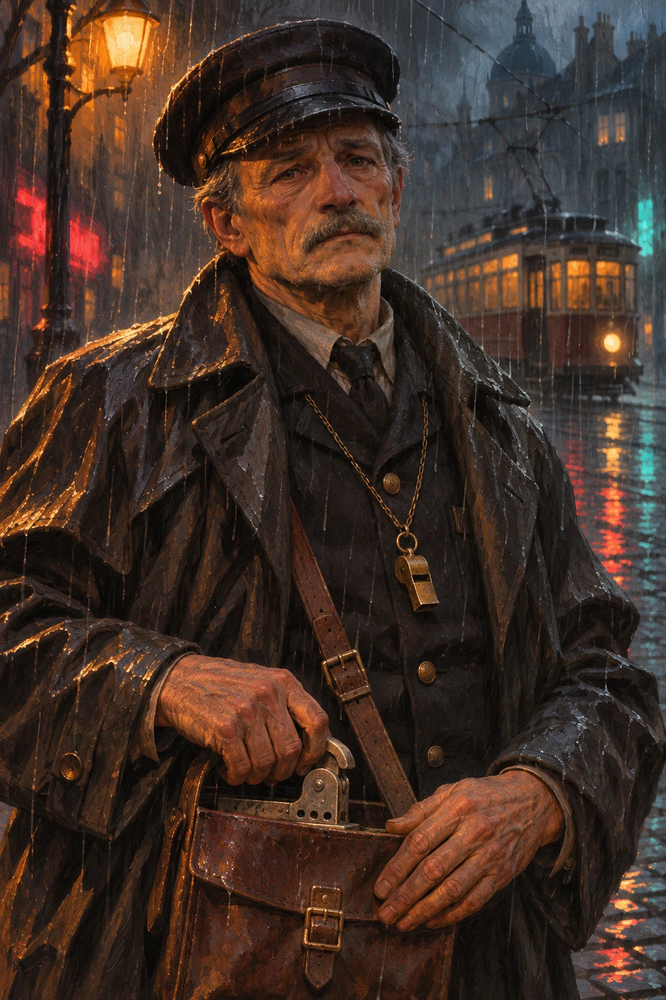
58 лет. Старший ночной кондуктор и вагоновожатый служебного трамвая: сумка с компостером, медный свисток на цепочке. Выводит последний служебный вагон из парка в 23:50.
Место: Трамвайный парк № 2 на Линейной
Намерение
Вывезти Савелия из города целым.
Собственные знания
- Что Савелий приехал 12 октября на трамвае № 3 «белый, как билет».
- Ворота 2 парка и расписание служебных вагонов.
- Кто знает про ворота 2: он, Савелий и те, кого Савелий позвал.
Секрет или личное убеждение
Прятал Савелия в билетной будке парка с 12 по 18 октября.
Граница и раскрытие
Не дерётся; уводит вагон по расписанию, кто бы ни просил остаться.
В вечере 7 приводит отряд к Савелию в билетный зал и показывает ведомость парка с настоящей подписью кассира.
Возможные финалы
Живым
Условия: Клара вышла из боя на крышах (30 хитов или меньше на 4–5 игроках, 40 на трёх, 18 на 6–8) или наступил конец раунда Фалька и Савелий жив; его держит герой в сознании или такой герой стоит рядом, а рядом нет соперника из команды, видевшей отряд.
Клара сидит на мокрой черепице, пистолет ушёл в колодец двора. Из башни выходят Хельга Меллер и инспектор Фальк. Савелий даёт показания в ту же ночь; через неделю могилу на Северном кладбище вскрывают, и Матвей Корд узнаёт пальто, которое подарил брату. Клару берут за стрельбу на крыше при свидетелях. За убийство Юлиана Корда её судят, если собран путь Б или есть показания живого Савелия вместе с ещё одним путём; пути А и В доказывают ложное опознание и подлог, путь Г — что она шла по следу отряда.
Цена: Савелий жив, но Латрена у него больше нет: жена, дом и имя на камне. Утром он уезжает первым трамваем к вокзалу и отдаёт отряду свой проездной: «Мне по нему больше не ездить». Гонорар Клары арестован как улика, бюро не получает ни кроны, а «Вечерний листок» пишет о нём «гончие убийцы».
В чужих руках
Условия: Бой кончился, а Савелия держит соперник или рядом с ним только соперник из видевшей отряд команды («чужие руки» — эта команда); или рядом с ним нет ни героя в сознании, ни соперника (тогда его забирает полиция Фалька); или соперники увели Савелия с крыши.
Если Савелия увели часовщики, «Точный час» записывает его живым, отказывает в выплате и сдаёт его Фальку как соучастника подлога: его подпись стоит на полисе. Если его увела артель, Матвей до утра слушает его в бытовке причала и на рассвете отпускает; Савелий исчезает из Латрена. Если его забрал Фальк, Савелия допрашивают как соучастника подлога и отпускают под надзор участка. Клару берут за стрельбу на крыше при свидетелях. За убийство Юлиана Корда её судят, только если собран путь Б; пути А и В доказывают ложное опознание и подлог, путь Г — что она шла по следу отряда.
Цена: Правду о ночи 12 октября в суде скажет не Савелий. Он больше не верит отряду и не приходит ни на допрос, ни на вскрытие могилы.
Последний свидетель
Условия: Савелий получил последнюю, третью рану.
Савелий садится на мокрую черепицу под неоновой «Ч» и больше не встаёт. Клару берут на крыше за стрельбу при свидетелях. Живого свидетеля больше нет: за убийство Юлиана Корда её судят, только если собран путь Б; пути А и В доказывают ложное опознание и подлог, путь Г — что она шла по следу отряда.
Цена: Вы нашли его. Как она и просила. Под его именем на кладбище уже лежит другой человек; теперь у Савелия Руна две могилы и ни одной своей.
Раздатки · выдавать постепенно
- Шкала дистанции — Начало вечера 1, кладётся на стол и остаётся на столе всю кампанию; ведущий двигает фишки карандашом.
- Похоронная карточка — Начало вечера 1, выдаётся вместе со шкалой дистанции.
- Записка Клары Рун — Сцена найма под навесом часовни, вечер 1, когда Клара пишет и отдаёт записку.
- Копия листа опознания — Фальк передаёт копию у калитки кладбища (сцена 3 вечера 1) или позже в участке на Шлюзовой.
- Страница ночного журнала — Стель позволяет переписать страницу (сцена 2 вечера 2) или Матвей показывает свою копию (вечер 5).
- Страница полиса — Сделка с Хельгой на мосту шлюза (вечер 5) или позже в «Точном часе» за слово «он жив» со снимком.
- Письмо Савелия — Конец вечера 6: письмо отдаёт Аглая или оно оказывается в кармане мокрого плаща героя после свалки в театре.
- Билеты из сумки — После боя у ворот 2 в вечере 7, когда сумку подняли из лужи. Часы последнего билета знает только ведущий (заметка вечера 7).
- Карта крыш — Сцена 2 вечера 8, до раунда 1; ведущий кладёт её на стол и вслух называет, что записано на его карте финала.
Как читать игровые проверки
Проверки характеристик и навыков, переговоры, часы и последствия из книги разрешает ведущий. Они не являются дополнительными автоматическими правилами приложения. Улики доступны без обязательного успешного броска. Подготовленные встречи начинаются только по решению ведущего; исходы и эпилоги заранее не записаны.
Когда свидетель готов говорить
Знание NPC не означает готовность раскрыть его при первом вопросе. В пакете свидетельства закрыты; ведущий использует условия раскрытия в карточке NPC и штатные действия для согласованных открытий. Независимые предметные улики доступны через осмотр, поэтому отказ свидетеля не блокирует расследование.
Статус подготовки
Кампания переработана: скелет и редактура — Claude Opus 5.5, текст — Claude Sonnet 5.5 через API проекта, иллюстрации (48) — генерация изображений OpenAI в одном стиле; подробности в README. Живой плейтест с людьми ещё не проведён. Локальная папка с исходниками и книгой предназначена ведущему.